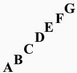

Notes
These are notes.
 These are notes, and after looking at this you probably notice two things. First; theres a note below the
bottom line, and it has a line through it. Secondly; there is a note that instead of being on a line is
between two lines.
These are notes, and after looking at this you probably notice two things. First; theres a note below the
bottom line, and it has a line through it. Secondly; there is a note that instead of being on a line is
between two lines.
that is because notes can be on either a line or a space. But what are the notes? The notes are from the alphabet and they are pictured below.

 These are all the notes. They are simply "A"-"G" of the alphabet, though usually when listed,
they are in the order on the right, starting with "C" to "G" and then having "A" and "B" on the end. The reason
for this will be discussed later. For now you only need to know is that the notes are:
These are all the notes. They are simply "A"-"G" of the alphabet, though usually when listed,
they are in the order on the right, starting with "C" to "G" and then having "A" and "B" on the end. The reason
for this will be discussed later. For now you only need to know is that the notes are:c, d, e, f, g, a, b and then the repeat back at c.
So now you know the notes, but do the dots on the lines make notes? Well each line and space between the lines corresponds to a note. As you learned earlier, there's two clefs, treble and bass. For now we'll just look at the treble clef.
 This is a treble clef. It is marked as a treble clef by the squiggly shape over the lines. For the treble cleff
the bottom line is an "e". So since the notes ascend as they go up the clef and the next note is the space
then that means that the space above e is f. After that space is another line, another note, the next not in
the order is g.
This is a treble clef. It is marked as a treble clef by the squiggly shape over the lines. For the treble cleff
the bottom line is an "e". So since the notes ascend as they go up the clef and the next note is the space
then that means that the space above e is f. After that space is another line, another note, the next not in
the order is g.
We can then fill out the rest of the notes to get this.